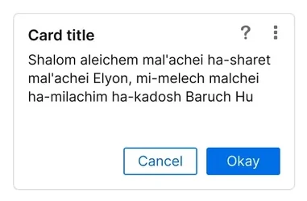
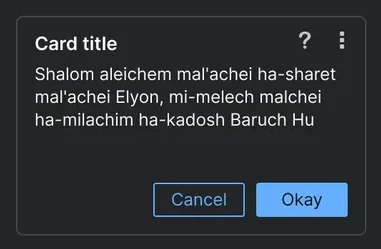
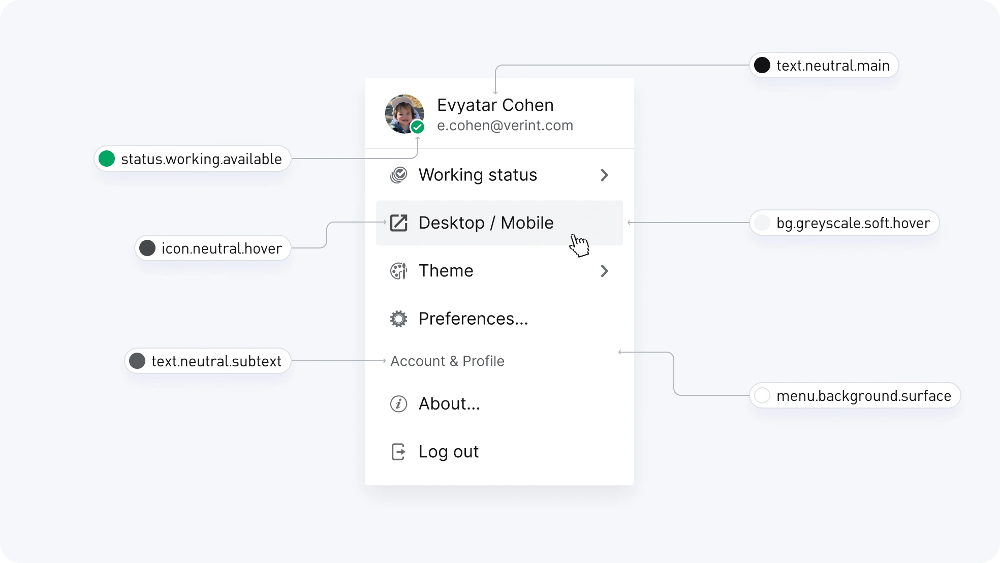

One system. 40+ products.
Zero hardcoded values.
LUX 2.0 replaced seven years of design debt with a token-driven system that lets a designer change a color in Figma and see it live in code - without filing a ticket.
Background
LUX 1.0 carried seven years of design debt. No tokens. No dark mode. No responsive design. Accessibility gaps on nearly every component. It still worked - but it was starting to block product teams who needed to move faster and support more contexts.
Rebuilding it became one of Verint's top-20 strategic goals. We started from scratch: a new token architecture, Verint's first motion design library, full accessibility coverage, and dark mode - a first in the company's history.
Challenge
This was my first time building a design system from the ground up. I had to learn token architecture - primitives, semantics, components - while running the project and the team at the same time. Every sprint was a balancing act: making architectural decisions that would be hard to undo, managing a committee of stakeholders with competing priorities, and keeping the documentation honest enough that teams would actually trust it.
The biggest technical challenge: closing the gap between design and code entirely. A designer changes a token in Figma - the change opens a PR in GitHub automatically, the developer merges, and it's live. No developer needed for design changes.
Solution
I structured the work into 2-week sprints - system architecture first, then tokens, then components and patterns. I didn't run it alone: a core team with weekly committee reviews kept quality consistent and unblocked decisions fast.
Alongside the component library, we built Verint's first motion design library - easing curves, duration tokens, and micro-animation specs for every interaction state. The pipeline from Figma to Storybook to GitHub runs fully automated - one token change in Figma, one PR, one merge.


- card/background/default #ffffffbackground.neutral.soft.regular_level_2base.white
- card/border/color/regular #dfe2e4border.neutral.regulargrey.200
- card/text/regular #121213text.neutral.maingrey.950
- card/icon/color/regular #6a6d70icon.neutral.regulargrey.700
Four colour bindings, and not one of them changes
between the themes. Dark mode is a mode on the primitives, not a
second component - so the card is drawn once and
text.neutral.main resolves to a different grey. That is
the whole reason it could ship on day one rather than as a project of
its own.
Result
LUX 2.0 is live across 40+ Verint products. Zero hardcoded values in the system. Product teams that once waited days for a color fix now merge it themselves in under a minute - no ticket, no developer, no delay.
Dark mode shipped on day one - the first in Verint's history. The motion library gave every product team a shared language for animation that hadn't existed before. For the first time, every interaction across the platform follows the same timing, the same easing, the same spec.

AI ran through the whole project - token architecture brainstorming, building all four Figma plugins from scratch (token sync, icon picker, table generator, layout creator), and QA passes to catch drift between design and code. The plugins alone saved weeks of manual implementation. Without AI in the loop, none of it would have shipped anywhere near as fast.